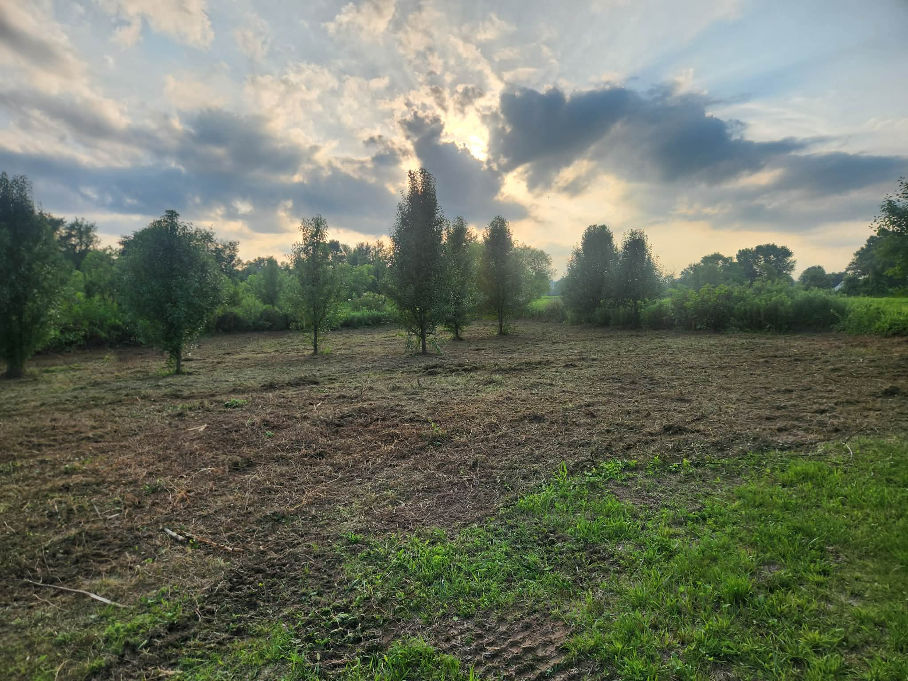

Invasives Taken to the Ground
Multiflora rose, honeysuckle, and autumn olive go through the head in one pass — including the tangled root collars that hand tools and brush hogs ride right over.
Brush Removal
Briars, honeysuckle, and volunteer scrub taken back to clean ground — fence rows you can see again, field edges that stop creeping inward.
Brush removal is the targeted version of the work. It is for the strip along the fence that has swallowed three strands of wire, the field edge that has crept twenty feet into the hay ground, the pond bank gone to willows, or the honeysuckle wall between you and the neighbor.
Around here that usually means multiflora rose, bush honeysuckle, autumn olive, greenbrier, and whatever volunteer maple and locust got a foothold. All of it goes through the mulching head and stays on the ground as chips. Nothing gets piled, burned, or hauled.
If the whole property has gone under rather than just the edges, forestry mulching is the same tool at a bigger scale. If the ground has to end up bare for building, land clearing is the heavier option.
Why It Works
Multiflora rose, honeysuckle, and autumn olive go through the head in one pass — including the tangled root collars that hand tools and brush hogs ride right over.
We work in from the field side and slow down as the wire appears. Flag your corners and gates and you get the fence line back without paying to rebuild it.
Most fence rows, field edges, and pond banks are half-day to full-day work. You are not committing to a week-long project to fix a strip of ground.
Mark the tank, the leach field, the water line, and the propane run. We clear from the edge with the head extended and keep the carrier off anything that matters.
The brush becomes chips on the spot. No burn pile smoldering in the corner of the field for a month, and no trailer loads to haul to a dump.
Thick brush next to a yard is habitat. Opening it up is one of the few things that genuinely reduces the tick pressure your family and dogs walk through.
How It Runs
A photo down the fence row or field edge and a rough length is enough to price most brush work.
Brush work is usually priced by the day. We tell you which one your job is, and what we expect to reach in that time.
Corner posts, gates, well heads, septic lids, survey pins, old equipment — flag it and it survives the day.
We take it down, then tell you honestly what it takes to keep it open — usually one mow a year.
Real Jobs

Straight Answers
We can take it to the ground in one pass and give you back the use of the land immediately. Permanently is a different question — both species resprout from the root crown, so the honest answer is that clearing buys you a clean slate and a maintenance plan keeps it. Mowing once a season, or spot treating the cut stumps, is what actually ends the cycle.
Yes, and it is one of our most common jobs. The mulching head works to within inches of a fence when the operator can see it. Where the fence is completely buried, we work in from the field side and slow down as we get close. Flag any corner posts, gates, or guy wires you know about and nothing gets surprised.
Most brush jobs are priced by the day, and a half day is usually the smallest that makes sense once you account for hauling the machine in and out. If your job is smaller than that, say so anyway — we will often pick it up alongside another job in the same area and price it accordingly.
A tracked machine spreads its weight well, but a leach field is still worth protecting. Mark the tank lid and field boundaries before we arrive and we will keep the carrier off it, clearing the growth from the edge with the head extended. The same goes for buried water lines, propane runs, and old cisterns.
Late fall through early spring is ideal. The leaves are off so the operator can see stems, structures, and property pins clearly, the ground is usually firm, and there are no nesting birds to work around. That said, summer clearing works fine and is often what people want most, because that is when the growth is at its worst.
Free Estimate
Three fields to start. A photo down the fence row and a rough length is usually all we need to price it.
Step 1 of 5
We'll reach out within 24 hours — usually a lot sooner. While you wait, see what your property could look like.